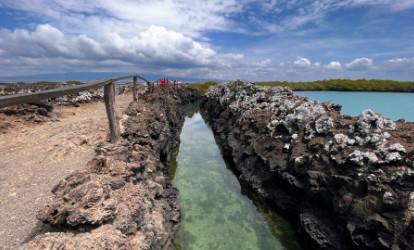

Isla Galapagos
Las islas Galápagos son un archipiélago volcánico del océano Pacífico.
Es conocido como uno de los destinos más famosos del mundo para la observación de fauna. Es una provincia de Ecuador y se encuentra a unos 1,000 km desde sus costas. Su terreno aislado alberga una diversidad de especies animales y vegetales, muchas de ellas exclusivas. Charles Darwin lo visitó en 1835 y su observación de las especies de Galápagos inspiró posteriormente su teoría de la evolución.

Ubicacion de la Isla Galapagos
Las Islas Galápagos se encuentran en el Océano Pacífico, a unos 1,000 kilómetros (aproximadamente 620 millas) de la costa continental de Ecuador, país al que pertenecen. Este archipiélago volcánico se ubica justo sobre la línea ecuatorial y es famoso por su biodiversidad única de flora y fauna
-
Continente: Sudamérica.
-
País: Ecuador.
-
Océano: Pacífico.
-
Coordenadas aproximadas: 0º 00' de latitud y 90º 00' de longitud Oeste.
-
Distancia a la costa continental: Aproximadamente 1,000 km (620 millas) al oeste de Ecuador
Geografia de la Islas Galapagos
Las Islas Galápagos son un archipiélago volcánico del océano Pacífico, ubicadas a unos 1.000 km al oeste de la costa de Ecuador, país al que pertenecen. Son famosas por su biodiversidad única y por haber inspirado la teoría de la evolución de Charles Darwin, quien las visitó en 1835 durante su viaje en el HMS Beagle.

Principales Islas de Galapagos
-
Isabela: Es la isla más grande del archipiélago y está formada por seis grandes volcanes.
- Superficie: ~4.588 km² (más del 50% del total del archipiélago)
- Volcanes principales: Sierra Negra, Cerro Azul, Alcedo, Darwin, Wolf, Ecuador
- Población: ~2.000 habitantes (principalmente en el pueblo Puerto Villamil)
- Ubicación: Al oeste del archipiélago, es una de las islas más biodiversas y menos desarrolladas turísticamente
Volcán Sierra Negra
Uno de los cráteres más grandes del mundo (10 km de diámetro).
Aún activo (última erupción en 2018).
Se puede hacer una caminata guiada hasta el borde del cráter, con vistas espectaculares y paisajes lunares.
-
üê¢
Centro de Crianza Arnaldo Tupiza
Centro de conservación de tortugas gigantes endémicas de Isabela.
Puedes ver tortugas de diferentes edades y aprender sobre los esfuerzos para su conservación.

-
ü¶é
Los Humedales
Red de senderos entre manglares, lagunas y pantanos.
Hogar de flamencos rosados, iguanas marinas, cangrejos, y muchas aves.
Accesibles a pie o en bicicleta desde Puerto Villamil.

-
üèùÔ∏è
Playa de Puerto Villamil
Una de las playas más bonitas de Galápagos.
Arena blanca y aguas tranquilas.
Perfecta para nadar, descansar o ver iguanas marinas tomando el sol.


-
üê†
Concha de Perla
Laguna natural ideal para snorkel cerca del muelle.
Puedes ver leones marinos, rayas, tortugas marinas y peces tropicales.


-
üêß
Islote Tintoreras
A pocos minutos en lancha desde Puerto Villamil.
Snorkel con tiburones de punta blanca, pingüinos de Galápagos, iguanas marinas y más.
islote

-
üåÖ
Muro de las Lágrimas
Antigua construcción hecha por prisioneros en el siglo XX, cuando la isla albergaba una colonia.
Carga histórica fuerte y vistas panorámicas desde los miradores.

-
Santa Cruz
Es la isla más poblada, con el mayor centro urbano de Puerto Ayora, y tiene uno de los aeropuertos principales.

-
San Cristóbal
-
Floreana
-
Fernandina
-
Santiago
-
Marchena
Forma parte de las siete islas principales, pero no está habitada.
Islas principales por tamaño y población
La Isla Isabela es la más grande del archipiélago de Galápagos y una de las más impresionantes en cuanto a paisajes volcánicos, biodiversidad y experiencias naturales únicas. Es una isla joven, formada por la unión de seis volcanes, varios de los cuales siguen activos.
Características generales
Que podemos ver en las Isla Isabel